魔法のカーペット

魔法のカーペットは乗ることで移動速度を大幅に向上できるほかに様々な恩恵を得られる移動ツールです。
ポータルスフィアからは通常カーペットが利用できますが、それ以外にも様々なバリエーションがあります。
共通効果
特殊カーペット
共通効果
・移動速度オプションや補正の恩恵が通常の3倍得られます。
・1frameに1座標距離が最速
1frameに進む座標距離は以下で計算可能。
走りの場合： { 0.0025 * [ 移動速度(%) ] + 0.25 }
絨毯の場合： { 0.0075 * [ 移動速度(%) ] + 0.75 }
ＧＶの場合： { 0.0005 * [ 移動速度(%) ] + 0.2 }
特殊カーペット
イベントなどで入手可能なカーペットの一覧。| 名称 | グラフィック | 効果 | 入手方法 |
|---|---|---|---|
通常カーペット
|
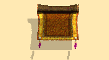 2020/9～ 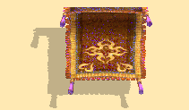 |
通常 | ・ポータル系アイテム ・魔法カーペット召喚巻物 (50回100GEM) |
ワイルドキャット |
 |
通常 | ・ポータル系アイテム所持時に装飾可能 ・ レッドストーン データブック+アイテムより。 （限定アイテムコード） |
タートルカーペット |
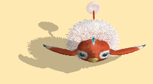 2020/9～ 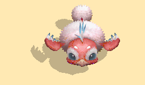 |
HP回復機能 | ・ログインキャンペーン(旧) ・各種ボックスドロップイベント |
リスポケットベル |
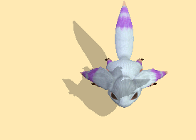 2020/9～ 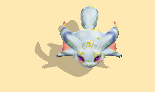 |
移動してもCP減少しない | ・ログインキャンペーン(旧) ・各種ボックスドロップイベント |
ドレイクカーペット |
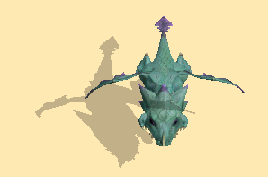 2020/9～ 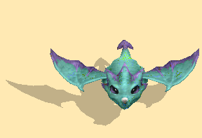 |
通常よりも移動速度が速い | ・ログインキャンペーン(旧) ・各種ボックスドロップイベント ・アリエルの薬 |
ギアカーペット |
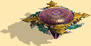 | 乗ったまま攻撃可能 | ・ログインキャンペーン(旧) ・各種ボックスドロップイベント |
フラワードリーム |
HP回復機能 | ・ログインキャンペーン(旧) ・各種ボックスドロップイベント ・2013デザインコンテストより。 |
|
10th記念カーペット |
 |
通常 | ・10週年記念イベント |
グリフォンカーペット |
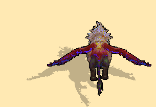 | 通常よりも移動速度が速い | ・ログインキャンペーン ・各種ボックスドロップイベント ・ドリームルーレット(2018-) |
もこもこ羊のカーペット |
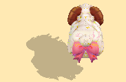 | 乗ったまま攻撃可能 | ・ログインキャンペーン ・各種ボックスドロップイベント ・ドリームルーレット(2018-) |
Fateコラボカーペット |
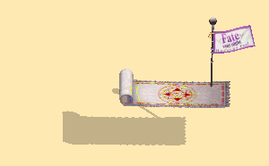 | 通常 | ・Fateコラボイベント |
エイカーペット |
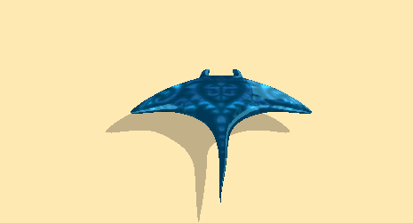 | 通常よりも移動速度が速い | ・ログインキャンペーン2020 ・各種ボックスドロップイベント |
15thカーペット |
通常 | ・15周年イベント |
備考
- 一部入手困難・不可能なカーペットがあります。- 一部クエストではカーペットに乗っていると進行できないものがあるため、注意。